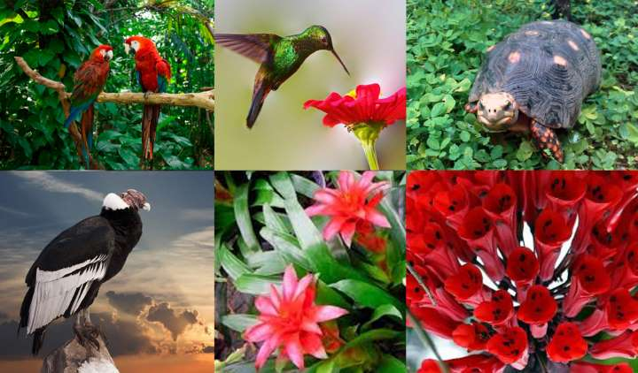

FLORA
La flora de Santa Rosa pertenece a la unidad fitogeográfica del Monte. Entre las especies más representativas del departamento, pueden mencionarse el algarrobo dulce, arbustos como la jarilla y la zampa y hierbas de los géneros Asistida, Setaria, Digitaria y otras.
FAUNA
En el departamento de Santa Rosa viven especies animales típicamente subandinas: mamíferos, tales como el ratón, el cuis, la comadreja, el pichi, el quirquincho y el zorro gris; aves como la perdiz, el pato, el jote, el carancho, la paloma y otras; además de diversos ofidios y demás reptiles.
